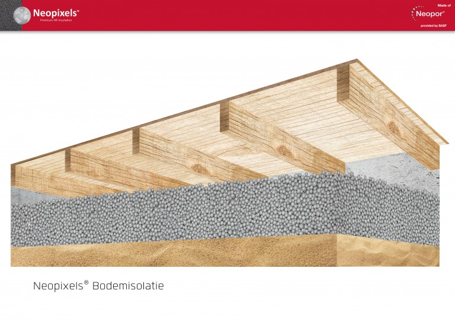

Bodemisolatie Neopixels
Bespaar ruim € 150,- per jaar met bodemisolatie Bodemisolatie is een goede oplossing voor het beperken van het warmteverlies bij vochtige en/of moeilijk bereikbare lage kruipruimten. De bodem van de kruipruimte is veelal vochtig, er treedt dan waterdamptranssport op vanuit de kruipruimte naar de woning. Ook treedt er warmteverlies op vanuit de woning naar de kruipruimte. Neopixels verminderd aanzienlijk het transport van vocht vanuit de bodem de kruipruimte in en zorgt ervoor dat de warmte vanuit de woning gevangen wordt in de kruipruimte.
| Toepassing | op de bodem van de kruipruimte |
| Materiaal | EPS/Polystyreen |
| Isolatiewaarde | Rbf waarde 4,37 m²K/W bij 20 cm dikte |
| Verwerking | ingeblazen per vrachtauto met inblaasslang |
| Garantie | 10 jaar op product en verwerking |
| Certificaat | ISSO gecontroleerde kwaliteitsverklaring |
| Prijs vanaf | €25,- p/m² incl. btw en verwerking; o.b.v. 20 cm prijs afhankelijk van situatie, oppervlak en dikte |
| Subsidie mogelijk | Ja, ISDE, klik hier |
| Besparing / jaar | Een gemiddelde besparing van € 100,- per jaar (ca. 50 m2) |
Lage investering
Meer comfort: door verdwijnen muffe lucht en/of stank uit huis
Bestrijdt ongedierte als huismijt, muggen, slakken en zilvervisjes
Verlagen luchtvochtigheid, beter voor astma en reuma gevoelige mensen
Droge kruipruimte
Werking
De EPS parels werken als een vaatwasser. In een vaatwasser worden de kopjes droog ondanks dat er niet geventileerd wordt.
Dat komt omdat de natte kopjes warm zijn en de bodem van de vaatwasser koud. Het vocht van de kopjes migreert daardoor naar de bodem alwaar het condenseert.
Hoe groter het temperatuurverschil tussen de kopjes en de bodem des te sneller de kopjes droog zijn.
De bodem van een geïsoleerde kruipruimte is altijd koel omdat de onderliggende aarde het gehele jaar een temperatuur van 10 tot 12 graden Celsius heeft.
Naarmate de isolatielaag tussen de koude bodem en de bovengelegen vloer dikker is zal ook het temperatuurverschil groter zijn.
Dus hoe dikker de bodemisolatie des te droger de kruipruimte.
Neopixels bodemisolatie is aanbevolen toe te passen in veelal vochtige kruipruimten met een beperkte vrije werkhoogte van minder dan 45 cm.
Is toe te passen in combinatie met vloerisolatie in kruipruimte met grote verschillen in grondwaterstanden.

Vergelijk meer producten
Dakisolatie
Platdakisolatie IKO EnerthermGeluid
Binnenwandsysteem HV70 Van FaayEco-Baffles Van VRK
Geluidisolatie Isolgomma Van Imbema
Gevel
BuitenisolatiegevelHoutvezelisolatie Van Gutex
Isolatie Isovlas PL Plaat
Spouwisolatie HR++ Neopixels EPS Parels
Glas
Glasfolie van HomechillHR++ Isolatieglas
Renovatieglas en Kozijnen
Vloer
Bodem afsluiting KalkkorrelsReflectiefolie Tonzon